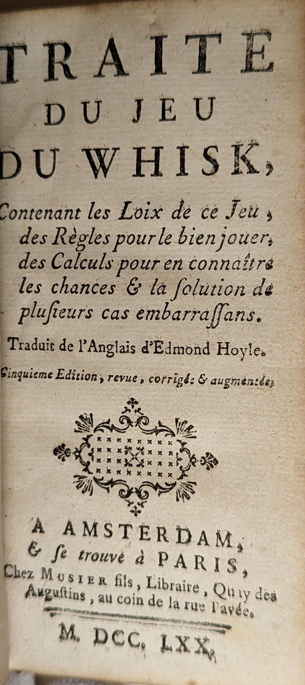

A Descriptive Bibliography of Edmond Hoyle
Copyright © 2014-26 by David Levy
(page updated 2026-03-24)User Guide
Musier.Whist.Fr.1770
Traité du Jeu de Whisk, Chez Musier Fils, “cinquième” edition, 1770.
 |
Title: | TRAITE | DU JEU | DU WHISK, | Contenant les Loix de ce Jeu, | des Règles pour le bien jouer, | des Calculs pour en connaître | les chances & la ſolution de | pluſieurs cas embarraſſans. | Traduit de l'Anglais d'Edmond Hoyle. | Cinquieme Edition, revue, corrigée & augmentée. | [tailpiece] | A AMSTERDAM, | & ſe trouve à PARIS, | Chez Musier fils, Libraire, Quay des | Auguſtins, au coin de la rue Pavée. | [short oxford rule] | M. DCC. LXX. |
| Collation: | 24o: A–E12 G4 [$½ (−G2) signed]; 64 leaves, pp. [i–iii] iv–vi, [7] 8–127 [128] |
| Contents: | Signature (Page) Reference | Contents | Signature (Page) Reference | Running Titles |
| A1r (i) | title | |||
| A1v (ii) | blank | |||
| A2r–A3v (iii–vi) | ‘[row of type orn] | INTRODUCTION. | [...]’ | |||
| A4r–G2v (7–124) | ‘[headpiece] | TRAITÉ | DU JEU DU WHIST, | [...]’ | A4v–G2v (8–124) | ‘Traité du Jeu | du Whisk.’ | |
| on A5v (10) | ‘Traite du Jeu’ | |||
| on A10r (19), B1r (25), C4r (55), E3r (101) | ‘du Whish.’ | |||
| on A11r (21), C12r (71) | ‘au Whisk.’ | |||
| G3r–G4r (125–127) | ‘[oxford rule] | TABLE | DES CHAPITRES’ | |||
| G4v (128) | blank |
| Publisher: | Chez Musier fils |
| References: | Depaulis 106, Rather E |
| Copies Seen: | O [Jessel f.587]; Levy [1204] |
| Other Copies: | BNF [V-41821]; FDBm [2835]; FRB [Rés.Diancourt PP 291]; LT [Wb 701]; Bodard; NNC-RB [B795 H85] |
| Notes: | In the signature A4, the letter A is rotated 90 degrees counter-clockwise. |